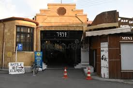
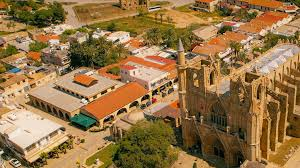
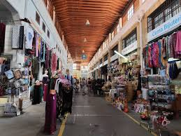

Bandabuliya, Lefkoşa’nın surlar içindeki en önemli tarihi yapılarından biri olan kapalı çarşıdır. Osmanlı döneminde ticaretin merkezi olarak kullanılan bu yapı, hem yerel halkın hem de tüccarların buluşma noktası olmuştur. İçerisinde geçmişte sebze, meyve, et ve çeşitli günlük ihtiyaç ürünleri satılmıştır. Mimari olarak geniş kemerli yapısı ve kapalı alan düzeni dikkat çeker. Günümüzde restore edilerek kültürel etkinlikler, sergiler ve sosyal buluşmalar için kullanılan canlı bir mekân haline gelmiştir.


Ana Sayfaya Dön